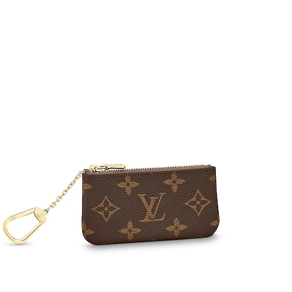
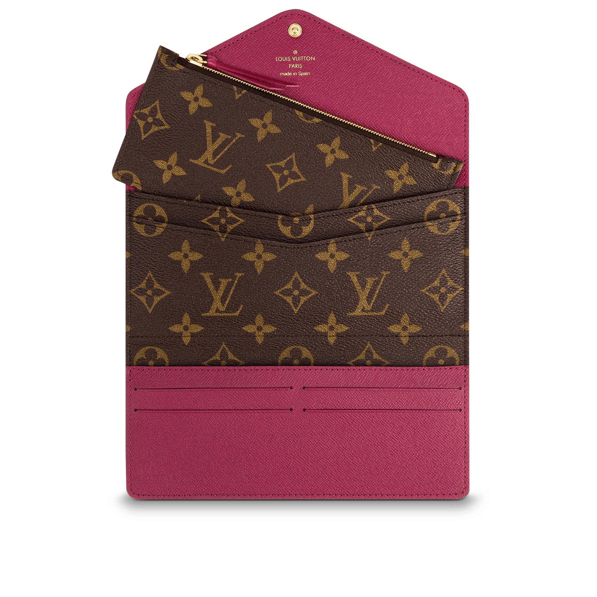
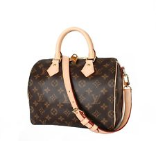
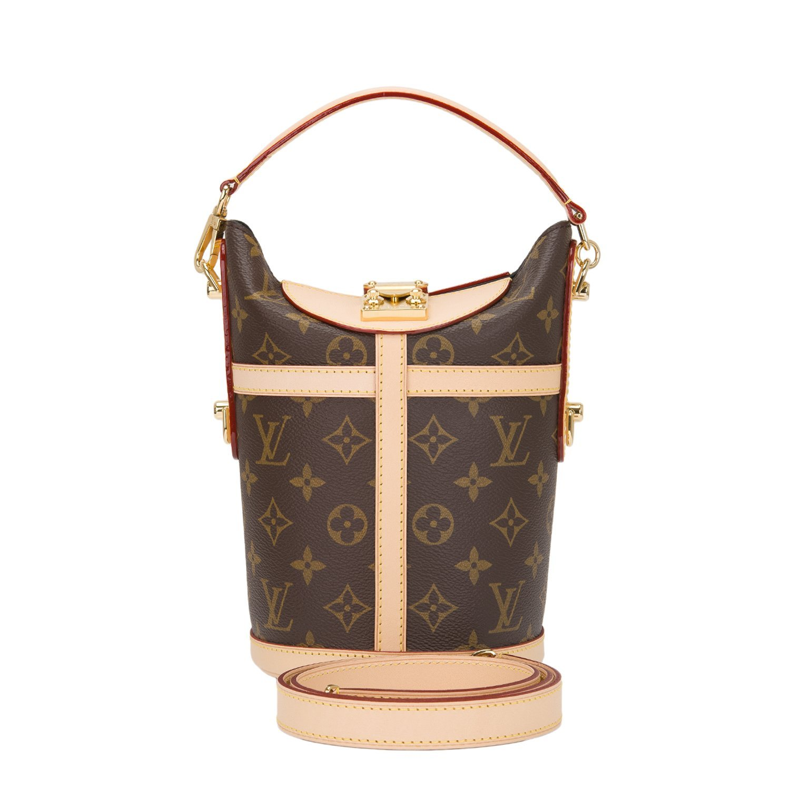

Welcome!
Love for Louis Vuitton
Louis Vuitton: How It All Began
When he was only sixteen years old, Louis Vuitton made a decision that would not only change his own life but the lives of his sons and future generations: he would become a trunk-master. Louis Vuitton’s heritage as a trunk maker preceded even the founding of the company. It was in 1837 that a 16-year-old Louis Vuitton arrived in Paris by foot and started apprenticing for Monsieur Maréchal. At the time, horse-drawn carriages, boats and trains were the main modes of transportation, and baggage was handled roughly. Travelers called upon craftsmen to pack and protect their individual objects. Louis Vuitton quickly became a valued craftsman at the Parisian atelier of Monsieur Maréchal. These were the roots of his highly specialized trade; the beginnings of his career in an artisanal industry that called upon skills to custom design boxes and, later, trunks according to clients’ wishes. Louis Vuitton stayed for 17 years before opening his own workshop at 4 Rue Neuve-des-Capucines near the Place Vendome.
Interested in learning more? Please visit the Louis Vuitton Website!
Lara and Louis Vuitton
I love Louis Vuitton.
I currently have a (growing) collection. I hope to continue to grow my collection and one day, I will pass it down to my own children.
Below are the four items I currently own (although these pictures are only from Google)
From left to right: Key Pouch (Monogram), Josephine (Monogram), Speedy Bandouliere 25 (Monogram), Duffle (Monogram)
   